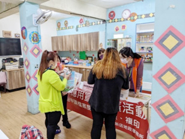
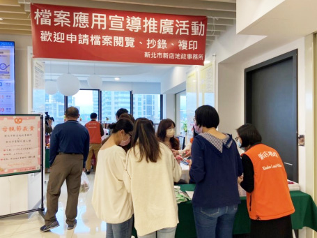
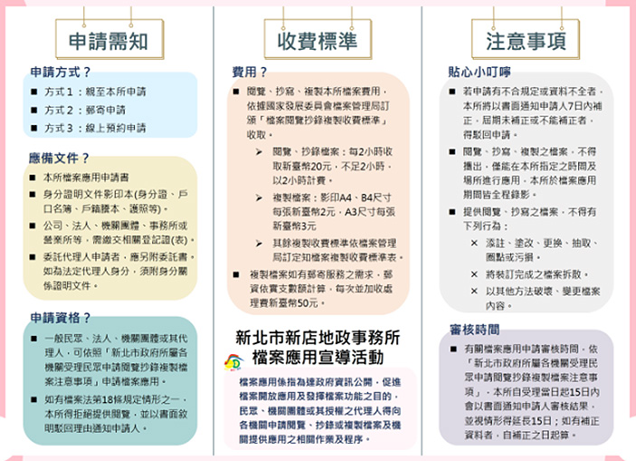
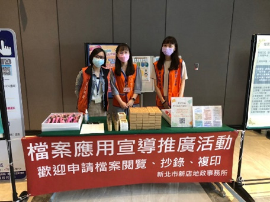
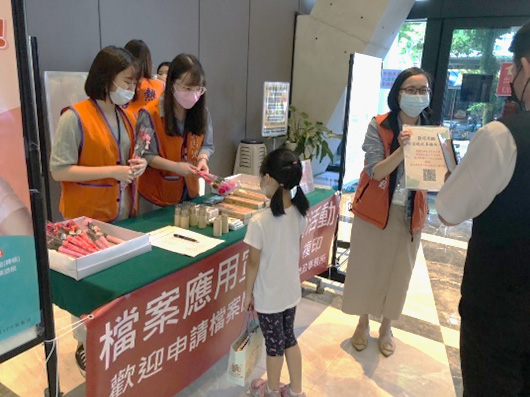
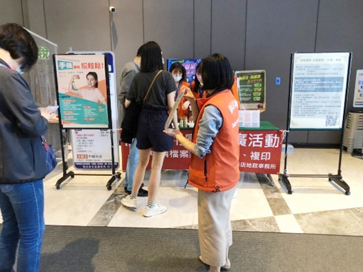
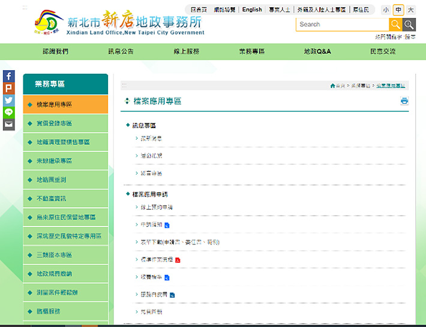

| 多元管道 1 | 自製文宣品 製作紅布條、磁鐵、陶瓷杯墊、馬克杯等文宣品，讓檔案應用宣導融入民眾日常生活。(自111年6月24日開辦) |
| 多元管道 2 |
地政專車宣導
鑒於本所轄區幅員廣闊，地形地貌多元，為提供偏遠地區便利地政服務，以擴大延伸本所服務範圍廣度，本所每月辦理至少一場地政專車服務，除提供業務申辦及各項諮詢服務，延伸政府機關服務據點，更為針對轄區居民宣導檔案應用申請之優質服務，透過現場宣導，更能加深居民對於本所地政便捷服務印象，回家後參加居民能推廣至親朋好友，以達到一傳十、十傳百之宣傳效益。本所自111年1月起開始於地政專車出隊進行宣導，迄今共辦理6場地政專車巡迴服務，宣傳127人次。

|
| 多元管道 3 |
溫馨五月 感恩母愛
本所於111年5月4日與集賢庇護工場共同舉辦母親節愛心義賣活動，本次義賣活動結合檔案應用推廣宣導，藉由3題簡單的Q&A，讓民眾能初步了解檔案應用可提供方式、申請方式及應備文件，回收問卷達77份。


|
| 多元管道 4 |
活動推廣
本所於111年5月6日在新店行政園區一樓大廳，辦理檔案應用宣導推廣活動，民眾參與踴躍，宣導人次達615人



|
| 多元管道 5 | 設計新穎吉祥物 形塑我們的吉祥物「超人店小鱷」巧妙融入轄區特色，帶著紀錄地政資料的檔案卷盒，隨時隨地積極推廣檔案應用。 |
| 多元管道 6 |
利用本所網站宣導
於本所網頁建置「檔案應用」主題專區，提供檔案應用申請服務、檔案法令查詢、檔案目錄查詢相關網站、檔案資源整合查詢平台、國家檔案資訊網、檔案情報站等資訊，自 110 年 7 月至 111 年 6 月 ( 截至 6 月 20 日止 ) 瀏覽人次為 1,014 人。

|
投入成本： 1200元 ( 紅布條 ) + 12,600 元 ( 磁鐵 ) + 19,350 元 ( 陶瓷杯墊 ) + 22,400 元 ( 馬克杯 )，合計 55,550 元。